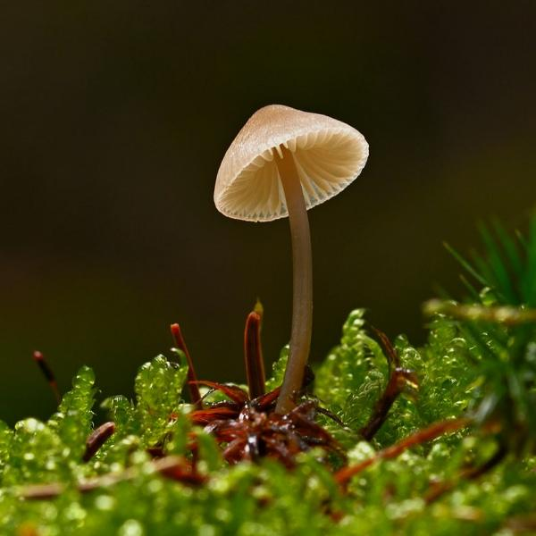
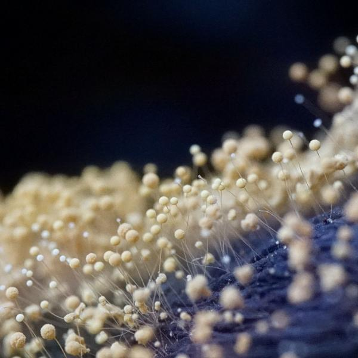
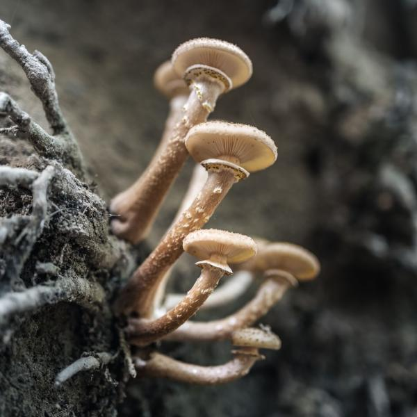
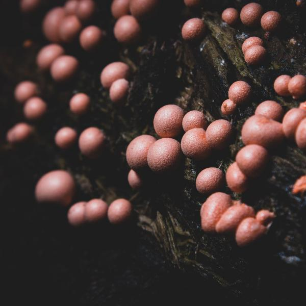

Terraforming Mars continues
Phase B trials commence summer 2038, delivering over 200 self-contained biospheres across the Martian surface. Experiments are to test the effects of reduced gravity and sunlight on terrestrial organisms.
Join the discussion and put forward the fungi you want to send to the red planet.
Sign up
Millions of fungi to choose from.

Resembling plants, fungi actually belong to their own distinct biological kingdom.

Unlike flowering plants that rely on seeds, fungi reproduce by producing billions of spores.

Roots systems can spread for hundreds of metres, sharing nutrients and warning signals.

Fungi secrete powerful enzymes that break down tough organic materials.
If there is one thing the history of evolution has taught us, it's that life will not be contained. Life breaks free, it expands to new territories and crashes through barriers... life... finds a way.
Registration open!
Join the discussion and put forward the fungi you want to send to Mars.